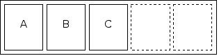

| Source file: | lru.{c, cpp, java} |
| Input file: | lru.in |
When accessing large amounts of data is deemed too slow, a common speed up technique is to keep a small amount of the data in a more accessible location known as a cache. The first time a particular piece of data is accessed, the slow method must be used. However, the data is then stored in the cache so that the next time you need it you can access it much more quickly. For example, a database system may keep data cached in memory so that it doesn't have to read the hard drive. Or a web browser might keep a cache of web pages on the local machine so that it doesn't have to download them over the network.
In general, a cache is much too small to hold all the data you might possibly need, so at some point you are going to have to remove something from the cache in order to make room for new data. The goal is to retain those items that are more likely to be retrieved again soon. This requires a sensible algorithm for selecting what to remove from the cache. One simple but effective algorithm is the Least Recently Used, or LRU, algorithm. When performing LRU caching, you always throw out the data that was least recently used.
As an example, let's imagine a cache that can hold up to five pieces of data. Suppose we access three pieces of data—A, B, and C. As we access each one, we store it in our cache, so at this point we have three pieces of data in our cache and two empty spots (Figure 1). Now suppose we access D and E. They are added to the cache as well, filling it up. Next suppose we access A again. A is already in the cache, so the cache does not change; however, this access counts as a use, making A the most recently used. Now if we were to access F, we would have to throw something out to make room for F. At this point, B has been used least recently, so we throw it out and replace it with F (Figure 2). If we were now to access B again, it would be exactly as the first time we accessed it: we would retrieve it and store it in the cache, throwing out the least recently used data—this time C—to make room for it.
|  | |
| Figure 1: Cache after A, B, C | Figure 2: Cache after A, B, C, D, E, A, F |
Your task for this problem is to take a sequence of data accesses and simulate an LRU cache. When requested, you will output the contents of the cache, ordered from least recently used to most recently used.
Input: The input will be a series of data sets, one per line. Each data set will consist of an integer N and a string of two or more characters. The integer N represents the size of the cache for the data set (1 ≤ N ≤ 26). The string of characters consists solely of uppercase letters and exclamation marks. An upppercase letter represents an access to that particular piece of data. An exclamation mark represents a request to print the current contents of the cache.
For example, the sequence ABC!DEAF!B! means to acces A, B, and C (in that order), print the contents of the cache, access D, E, A, and F (in that order), then print the contents of the cache, then access B, and again print the contents of the cache.
The sequence will always begin with an uppercase letter and contain at least one exclamation mark.
The end of input will be signaled by a line containing only the number zero.
Output: For each data set you should output the line "Simulation S", where S is 1 for the first data set, 2 for the second data set, etc. Then for each exclamation mark in the data set you should output the contents of the cache on one line as a sequence of characters representing the pieces of data currently in the cache. The characters should be sorted in order from least recently used to most recently used, with least recently occuring first. You only output the letters that are in the cache; if the cache is not full, then you simply will have fewer characters to output (that is, do not print any empty spaces). Note that because the sequence always begins with an uppercase letter, you will never be asked to output a completely empty cache.
| Example input: | Example output: |
| 5 ABC!DEAF!B! 3 WXWYZ!YZWYX!XYXY! 5 EIEIO! 0 | Simulation 1 ABC CDEAF DEAFB Simulation 2 WYZ WYX WXY Simulation 3 EIO |